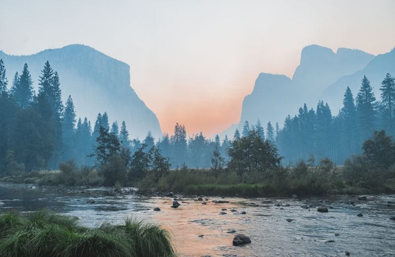

Geomorfologia
O Formato da Terra
Estuda as planícies, planaltos e depressões. Entender o relevo é saber onde as cidades podem crescer e onde a agricultura é mais fácil.

A Geografia Física é o estudo dos "alicerces" do nosso mundo. Ela investiga tudo o que aconteceu e acontece naturalmente no planeta, desde o movimento das montanhas até a queda das chuvas. Compreender esses processos é a chave para entender como o ser humano pode usar os recursos naturais de forma inteligente e se proteger dos desastres naturais.

A força invisível que molda o relevo.
Estuda as planícies, planaltos e depressões. Entender o relevo é saber onde as cidades podem crescer e onde a agricultura é mais fácil.

Analisa os regimes de chuva e calor. O clima dita o que vestimos, o que comemos e como o planeta se aquece ou esfria.

O estudo das águas. Sem rios não há energia elétrica nem abastecimento para as cidades. As bacias hidrográficas são as veias do país.
A Geologia estuda o que está abaixo dos nossos pés: as rochas, o magma e os minerais. É daqui que tiramos o ferro para os carros e o petróleo para o combustível. Entender as placas tectônicas é entender por que o chão treme em alguns lugares e em outros não.
A Geografia Física é o subcampo essencial focado na dinâmica da Litosfera, Hidrosfera, Atmosfera e Biosfera. Através de inter-relações naturais e geossistemas, analisa-se como as massas continentais e oceânicas regulam o equilíbrio termodinâmico planetário. Sem isso, desastres e assoreamentos não podem ser avaliados em escalas seguras para a sobrevivência das infraestruturas humanas.
A Geografia Física é o ramo da ciência geográfica que estuda a litosfera, a hidrosfera, a atmosfera e a biosfera terrestre. Diferente da biologia ou da geologia pura, a geografia física se preocupa com a relação de interdependência entre esses sistemas e como eles compõem as paisagens habitadas pelo homem.
Por exemplo, ao estudar o relevo (Geomorfologia), não analisamos apenas as formas de montanhas ou planícies, mas sim como a topografia pode facilitar ou dificultar a agricultura e o adensamento urbano. A Climatologia estuda os padrões de temperatura e precipitação que, somados aos diferentes solos (Pedologia), determinam a diversidade da Vegetação mundial.
Para os exames estruturados como o ENEM, compreender a Geografia Física sempre exige associar esses quadros naturais à ação antrópica (humana). Fenômenos como a desertificação, a arenização, o assoreamento de rios e a inversão térmica nas grandes cidades são o resultado direto de como as atividades humanas colidem com a dinâmica física do planeta.
Fonte: Adaptado de SANTOS, M. A Natureza do Espaço / Resumos Toda Matéria.
Disponível em: https://www.todamateria.com.br/geografia-fisica/